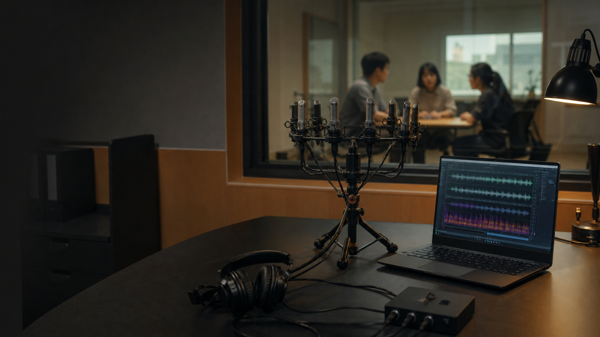

Cocktail-party target speech extraction
参考声音引导的目标说话人提取
CAFE-TSE 把人类听觉注意拆成可计算的三步：用参考语音确定“听谁”，用频谱预增强突出目标线索，再用轻量掩码主干完成目标提取；最终复核同时展示了参考泄漏会怎样制造虚高指标。
交互式系统架构图
悬停任一模块查看它在鸡尾酒会目标说话人提取中的作用。
模块说明
悬停架构图中的模块查看细节。
真实案例展厅
三组真实案例：听、看、比。
波形与频谱印象
混合语音
CAFE-TSE 输出
基线模型
目标真值
实验图表墙
用量化图表说明：绝对增益与效率变化。
主指标对比
综合能力雷达图
参考锚点权重扫描
轻量化效率
训练收敛曲线
难度分组表现
参考语音鲁棒性
模块贡献瀑布图
三说话人压力测试
认知机制映射
从人类听觉注意到计算模块。
人在嘈杂环境中不是平均聆听所有声音，而是先形成“我要听这个人”的内部目标。参考语音在系统中承担同样角色：它给出目标说话人的音色、发声习惯和长期频谱轮廓，使任务从盲源分离变成目标导向提取。
人脑会把基频、共振峰、音色、起止时间和短时连续性绑定成一个稳定的听觉对象。模型把参考语音编码成说话人条件，并注入时频主干，让混合语音里与目标身份一致的结构获得更高权重。
注意不是只在听到之后再选择，也会提前改变对声学线索的敏感度。EGSP 使用目标频谱画像对混合频带做预增强，相当于让模型先把“可能属于目标”的频带抬高，再交给分离网络判断。
鸡尾酒会听觉依赖对干扰声源的持续抑制。幅度掩码头在每个时频单元估计保留比例，压低非目标人声和噪声成分，把“听觉过滤”落到可解释的时频选择上。
人的注意资源有限，系统的计算预算也有限。5-block 主干用更少参数和 MACs 保持核心分离能力，适合把目标说话人提取放到实时或边缘场景中展示。
人在复杂听觉环境中需要不断确认“听到的是不是目标”。系统实验也需要同样的复核：无泄漏 disjoint enrollment 显示，直接把参考语音当输出锚点会破坏指标，因此锚点只保留为失败案例。